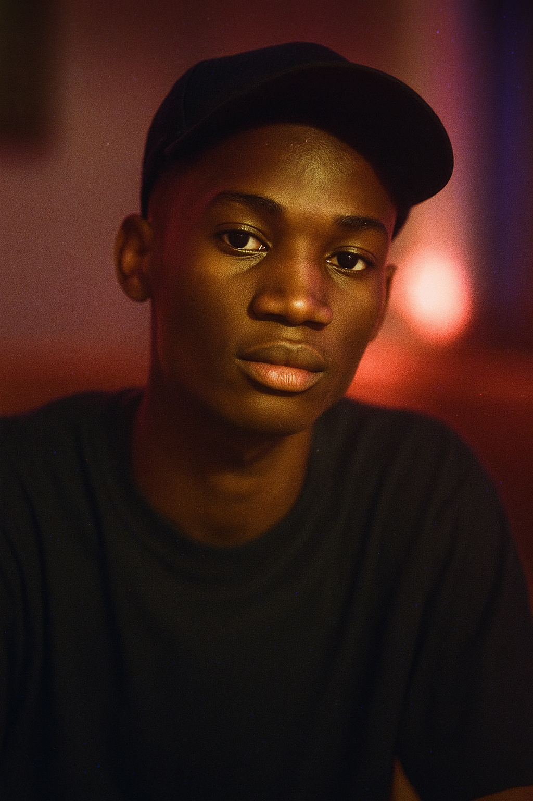
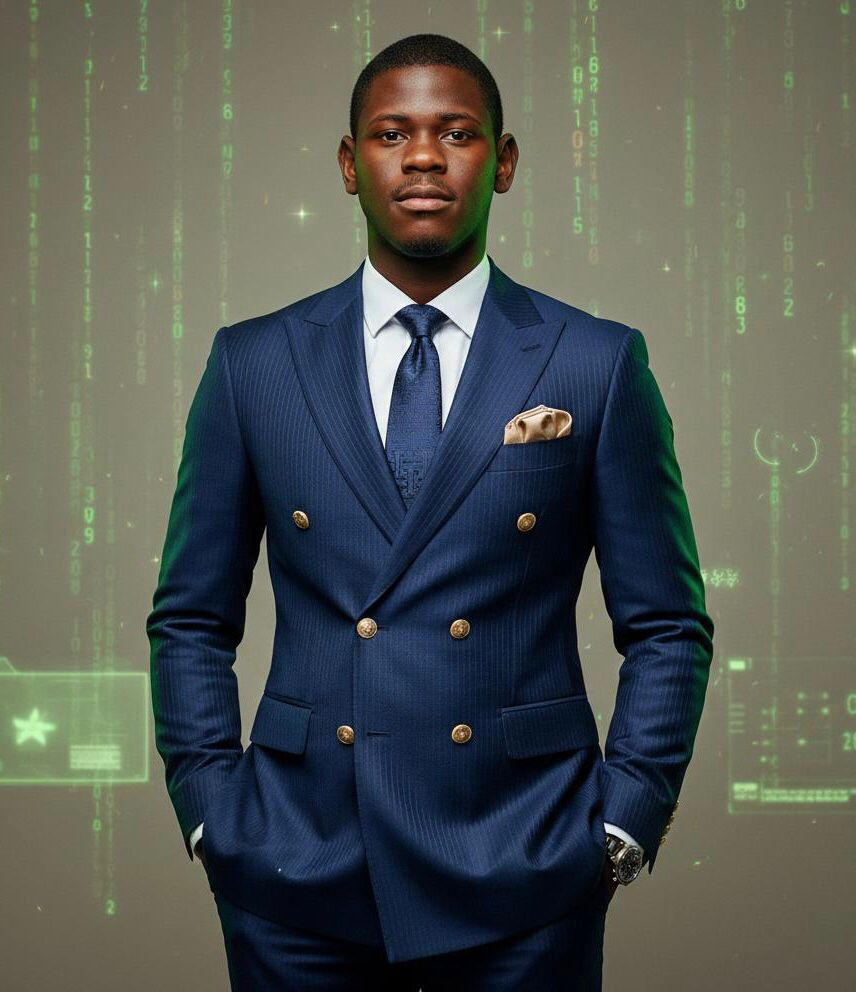
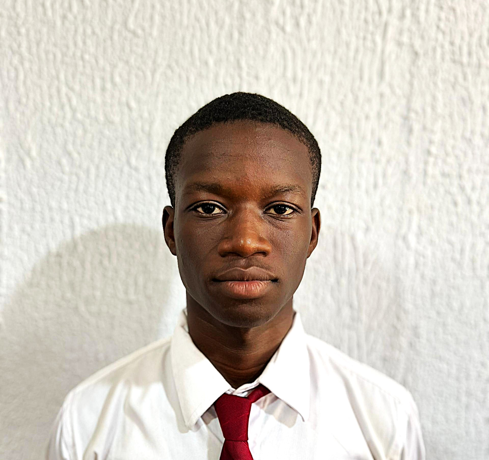

Cinq étudiants de l'UIYA. Des compétences complémentaires, un projet commun : faire de TechPulse le club tech de référence en Côte d'Ivoire.

Fréjus est l'architecte visuel de TechPulse. Chaque interface que tu vois sur cette plateforme — du formulaire de candidature à l'espace admin — est passée par ses mains. Il croit que la technologie mérite d'être belle autant que fonctionnelle.
Son moteur : concevoir des expériences qui donnent envie d'agir. Son obsession : que chaque pixel soit justifié.

Christ David est le garant de l'architecture data de TechPulse. Il pense en collections, modélise en documents et conçoit des structures qui tiennent quand la charge augmente. Sans lui, rien ne persiste.
Passionné par les systèmes fiables, il s'assure que chaque candidature, chaque réponse de test, chaque membre admis est stocké correctement et accessible immédiatement.

Mickael construit la mécanique invisible. L'API REST qui fait tourner toute la plateforme — de l'inscription des candidats à la finalisation des sessions de test — c'est lui. Python, FastAPI, logique métier, sécurité des données.
Il pense en endpoints, en schemas, en cas limites. Son travail est ce que les utilisateurs ne voient jamais — et c'est exactement là que réside sa fierté.
Jemima donne une voix et un visage à TechPulse. Elle construit l'identité visuelle du club, pilote la communication externe et s'assure que le message que TechPulse envoie au monde est cohérent, fort et mémorable.
Elle croit qu'un club tech sans identité forte est un club qui disparaît dans le bruit. Son rôle : faire rayonner TechPulse bien au-delà du campus de l'UIYA.
Samuella est la colonne vertébrale de TechPulse. Elle coordonne les équipes, gère les projets transversaux, organise les événements et s'assure que ce que les autres ont planifié se réalise vraiment.
Sans elle, les bonnes idées restent des idées. Avec elle, elles deviennent des actions concrètes, dans les délais, avec les bonnes personnes.
La prochaine session de sélection est ouverte.